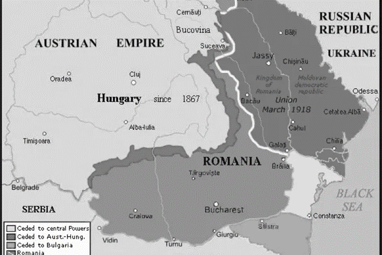

Consecintele Primului Razboi Mondial asupra Romaniei au fost semnificative. In primul rand, Romania a castigat teritorii noi, inclusiv Transilvania, Banatul si Maramuresul, care au fost unite cu Regatul Romaniei. Aceasta a dus la cresterea teritoriului si populatiei tarii.
Cu toate acestea, razboiul a avut un impact negativ asupra economiei si infrastructurii Romaniei. Productia agricola si industriala a scazut, iar tara a fost nevoita sa se bazeze pe ajutorul international pentru a-si reveni. De asemenea, razboiul a adus o pierdere semnificativa de vieti umane si resurse materiale.